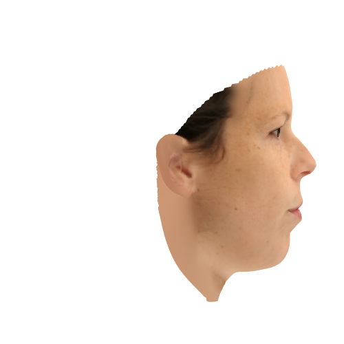
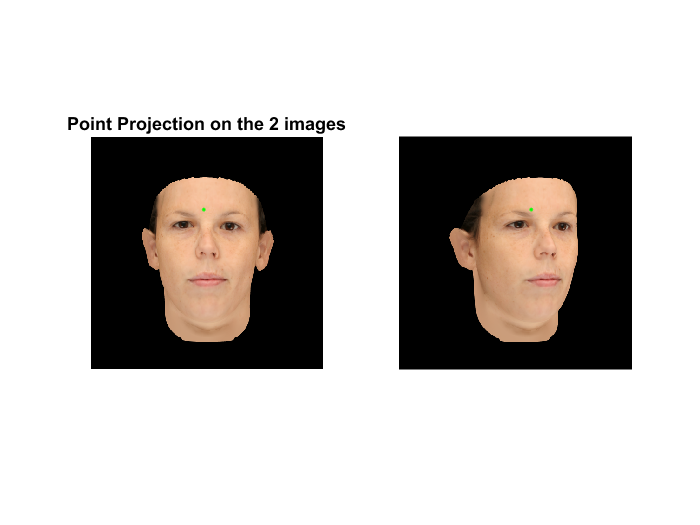
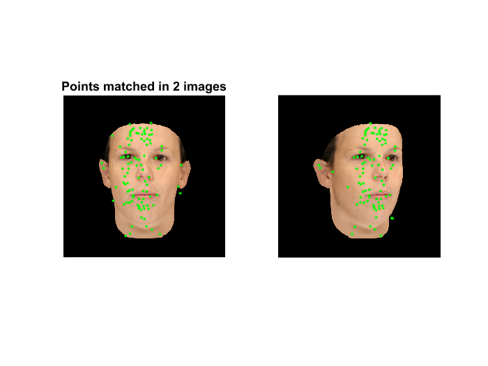
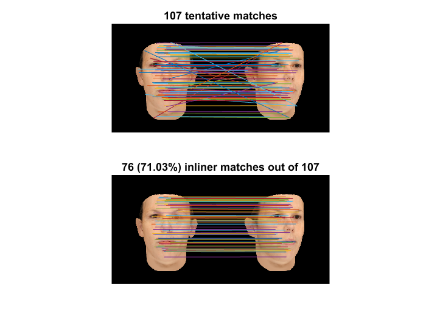
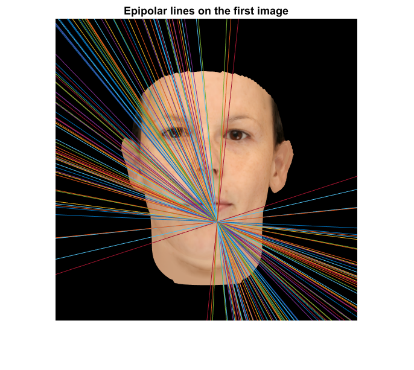

Exercise 2 report, title "face pose estimation", Ntambaazi Tonny_CIMET : ...,
Contents
Part I. Synthesis of a sequence of images
clear; close all; clc
1/ Load Data (Vertices, Faces, Texture), Display and rotate
load('model_3D_01.mat');
vertices(:,3)=-vertices(:,3);
vertices=vertices/max(vertices(:));
Nx=400;Ny=Nx;
pix=20e-3;
focal=50;
fov=2*atand(Ny*pix/2/focal);
camera location on the optical axis (OZ)
poscamZ = -20;
phi=0:10:90;
for c=1:size(phi,2)
RY=XYZrotation(phi(c),2);
verticesR=(RY*vertices')';
display_face_fac_vert_tex0(faces, verticesR,texture, [Nx Ny],poscamZ);
camva(fov);
pause(0.3)
F = getframe(gcf);
I(c).image=F.cdata;
imwrite(I(c).image,sprintf('model_%03d.png',phi(c)))
end

1_ 2
dbtype('display_face_fac_vert_tex0.m')
1 function display_face_fac_vert_tex0(faces, vertices,texture, fpos,poscamZ)
2 % Use : display_face_fac_vert_tex(faces, vertices,texture, fpos,poscamZ)
3 % Inputs :
4 % *faces : gives the 3 numbering of the vertices that create faces (Nfx3)
5 % *vertices : XYZ of each vertices (Nvx3)
6 % *texture : RGB of each vertices (Nvx3)
7 % *fpos : raw vector , fpos(1) is the width of the displayed window , fpos(2) is the height of the displayed window
8 % *poscamZ : camera position (<0)
9
10 set(gcf, 'Renderer', 'opengl');
11 fig_pos = get(gcf, 'Position');
12 fig_pos(3) = fpos(1);%rp.width
13 fig_pos(4) = fpos(2);%rp.height
14 set(gcf, 'Position', fig_pos);
15 set(gcf, 'Resize', 'off');
16
17 mesh_h = trimesh(...
18 faces, vertices(:, 1), vertices(:, 2), vertices(:, 3), ...
19 'EdgeColor', 'none', ...
20 'FaceVertexCData', texture/255, 'FaceColor', 'interp', ...
21 'FaceLighting', 'phong' ...
22 );
23
24
25 set(gca,'DataAspectRatio',[ 1 1 1 ],'Units','pixels','Position',[ 0 0 fig_pos(3) fig_pos(4) ],...
26 'Visible','off','Box','off','Projection','perspective','CameraPosition',[0 0 poscamZ],...
27 'CameraTarget',[0 0 1],'CameraUpVector',[0 1 0]);
28 % ax = gca;
29 % ax.DataAspectRatio=[ 1 1 1 ];% 'PlotBoxAspectRatio', [ 1 1 1 ], ...
30 % ax.Units='pixels';
31 % ax.Position=[ 0 0 fig_pos(3) fig_pos(4) ];
32 % ax.Visible='off';
33 % ax.Box='off';
34 % ax.Projection='perspective';
35 % ax.CameraPosition=[0 0 poscamZ];
36 % ax.CameraTarget=[0 0 1];
37 % ax.CameraUpVector=[0 1 0];
38 xlabel('x');ylabel('y');zlabel('z');
39
40 fx=gcf;
41 fx.Color=[ 0 0 0 ];
42
43 set(gcf,'Color',[ 0 0 0 ])
44 % material([.5, .5, .1 1 ])
45 % camlight('headlight');
46
Calutating the matrices
Rotation of the first image at 0 rotation:
Rot_1 = XYZrotation(0,2);
Rot_2 = XYZrotation(20,2);
trans_1 = [0,0, -poscamZ];
Rot_trans1 = [Rot_1, trans_1'; 0,0,0,1];
Rot_trans2 = [Rot_2, trans_1'; 0,0,0,1];
K_mat = [-1/pix, 0, Nx/2; 0, -1/pix, Nx/2; 0, 0, 1];
Pro_mat = [focal, 0, 0, 0; 0, focal, 0, 0; 0, 0, 1, 0;];
Calib_1 = K_mat * Pro_mat * Rot_trans1;
Calib_2 = K_mat * Pro_mat * Rot_trans2;
point = [vertices(3897,:), 1];
point_1 = Calib_1 * point';
point_2 = Calib_2 * point';
point_1 = point_1 / point_1(3);
point_2 = point_2 / point_2(3);
I_1 = imread('model_000.png');
I_2 = imread('model_020.png');
figure;
subplot (1,2,1),
imshow(I_1);
title('Point Projection on the 2 images');
hold on;
plot(point_1(1,1),point_1(2,1),'g.');
subplot (1,2,2), imshow(I_2);
hold on;
plot(point_2(1,1),point_2(2,1),'g.');

Part 2_1 Feature points detection and matching
run('vlfeat/toolbox/vl_setup')
I_gray1 = single(rgb2gray(I_1));
I_gray2 = single(rgb2gray(I_2));
[F1, D1] = vl_sift(I_gray1);
[F2, D2] = vl_sift(I_gray2);
[matches, scores] = vl_ubcmatch(D1, D2, 1.6) ;
figure;
subplot(1,2,1);
imshow(uint8(I_1));
title('Points matched in 2 images');
hold on;
plot(F1(1,matches(1,:)),F1(2,matches(1,:)),'g.');
subplot(1,2,2);
imshow(uint8(I_2));
hold on;
plot(F2(1,matches(2,:)),F2(2,matches(2,:)),'g.');

Part 2_2 The Ransac algorithm
numMatches = size(matches,2);
X1 = F1(1:2,matches(1,:)) ; X1(3,:) = 1 ;
X2 = F2(1:2,matches(2,:)) ; X2(3,:) = 1 ;
for t = 1:100
subset = vl_colsubset(1:numMatches, 4) ;
A = [] ;
for i = subset
A = cat(1, A, kron(X1(:,i)', vl_hat(X2(:,i)))) ;
end
[U,S,V] = svd(A) ;
H{t} = reshape(V(:,9),3,3) ;
X2_ = H{t} * X1 ;
du = X2_(1,:)./X2_(3,:) - X2(1,:)./X2(3,:) ;
dv = X2_(2,:)./X2_(3,:) - X2(2,:)./X2(3,:) ;
ok{t} = (du.*du + dv.*dv) < 6*6 ;
score(t) = sum(ok{t}) ;
end
[score, best] = max(score) ;
H = H{best} ;
ok = ok{best} ;
dh1 = max(size(I_2,1)-size(I_1,1),0) ;
dh2 = max(size(I_1,1)-size(I_2,1),0) ;
figure ; clf ;
subplot(2,1,1) ;
imagesc([padarray(I_1,dh1,'post') padarray(I_2,dh2,'post')]) ;
o = size(I_1,2) ;
line([F1(1,matches(1,:));F2(1,matches(2,:))+o], ...
[F1(2,matches(1,:));F2(2,matches(2,:))]) ;
title(sprintf('%d tentative matches', numMatches)) ;
axis image off ;
subplot(2,1,2) ;
imagesc([padarray(I_1,dh1,'post') padarray(I_2,dh2,'post')]) ;
o = size(I_1,2) ;
line([F1(1,matches(1,ok));F2(1,matches(2,ok))+o], ...
[F1(2,matches(1,ok));F2(2,matches(2,ok))]) ;
title(sprintf('%d (%.2f%%) inliner matches out of %d', ...
sum(ok), ...
100*sum(ok)/numMatches, ...
numMatches)) ;
axis image off ;

Part 2_2 The Ransac algorithm: testing larger angles
Part 3_1 Computation of the fundamental matrix
mat1 = ones( 1, size(matches,2));
pt_1 = [F1( 1:2, matches(1,:)); mat1];
pt_2 = [F2( 1:2, matches(2,:)); mat1 ];
Fundamental_max = det_F_normalized_8point(pt_1,pt_2);
Fundamental_max
point_set = F1( 1:2, matches(1,:));
epiLines = epipolarLine(Fundamental_max', point_set');
points = lineToBorderPoints(epiLines,size(I_1));
figure;
imshow (I_1);
title('Epipolar lines on the first image')
hold on;
line(points(:,[1,3])',points(:,[2,4])');
Fundamental_max =
-0.0001 -0.0001 0.0339
0.0000 0.0000 -0.0127
-0.0025 0.0168 -5.0062

Part 3_2 Computation of the essential matrix
Essential_mat = K_mat' * Fundamental_max * K_mat;
Essential_mat
Essential_mat =
-0.1439 -0.1367 -0.5716
0.0955 0.0180 0.1802
0.3164 -0.3661 -0.5694